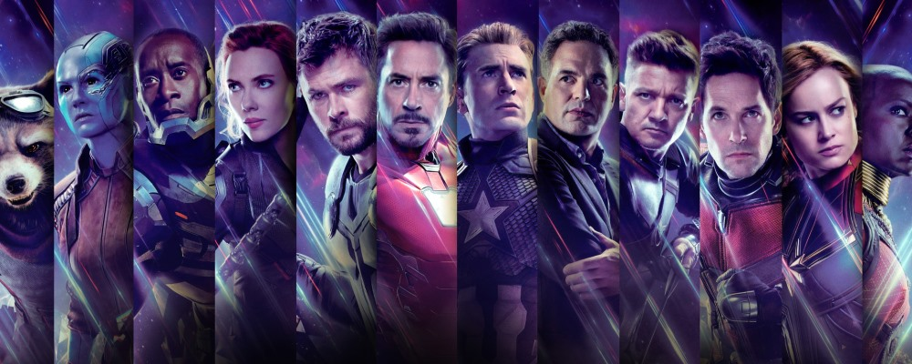

- Nick Fury: Director de S.H.I.E.L.D., maestro de la estrategia y la inteligencia, con una amplia red de recursos y contactos.
- Capitán América (Steve Rogers): Supersoldado con fuerza sobrehumana, agilidad y un escudo indestructible que utiliza tanto para defenderse como para atacar.
- Black Widow (Natasha Romanoff): Espía y experta en artes marciales, habilidosa en el combate cuerpo a cuerpo y en el uso de diversas armas.
- Hawkeye (Clint Barton): Experto arquero y tirador preciso, también es habilidoso en el combate cuerpo a cuerpo y en el uso de armas de largo alcance.
- Doctor Strange (Stephen Strange): Maestro de las artes místicas, utiliza hechizos y artefactos mágicos para manipular la realidad y defender el cosmos.
- Iron Man (Tony Stark): Genio, multimillonario y filántropo, Tony utiliza su armadura de alta tecnología para volar, disparar rayos repulsores y protegerse.
- War Machine (James "Rhodey" Rhodes): Piloto y amigo de Tony Stark, utiliza una armadura similar a la de Iron Man con armamento pesado.
- Thor: Príncipe de Asgard y dios del trueno, posee un martillo mágico, Mjolnir, que le otorga control sobre los rayos y la capacidad de volar.
- Hulk (Bruce Banner): Científico convertido en una masa de fuerza y resistencia sobrehumanas cuando se enfada, con una transformación impulsada por la ira.
- Falcon (Sam Wilson): Con alas mecánicas, puede volar y maniobrar en el aire, además de ser un hábil luchador cuerpo a cuerpo.

Principales representantes de The Avengers
Horarios de Reclutamiento
- martes de 15:30 a 17 hs
- jueves de 15:30 a 17 hs